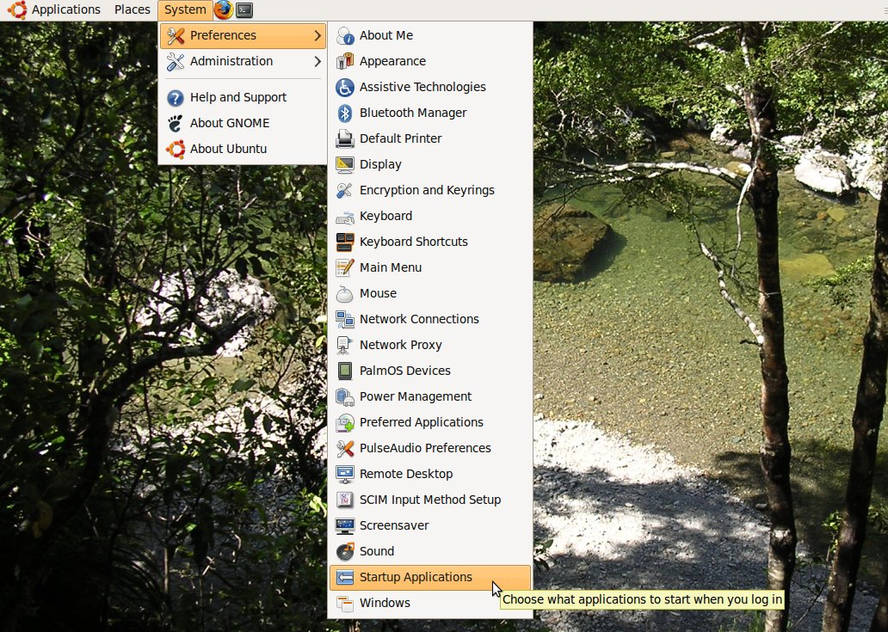
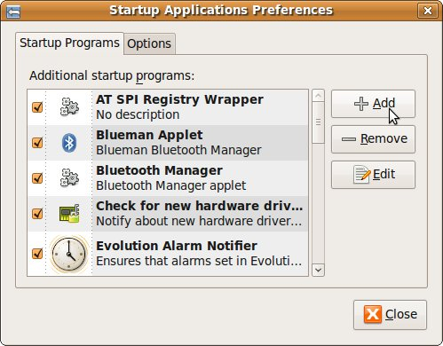
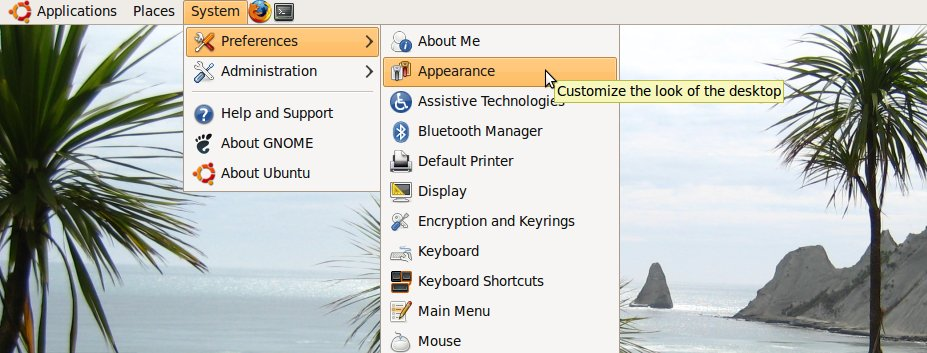
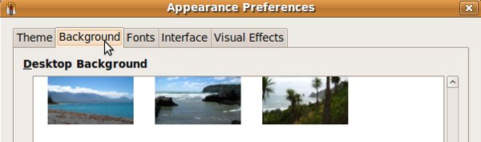
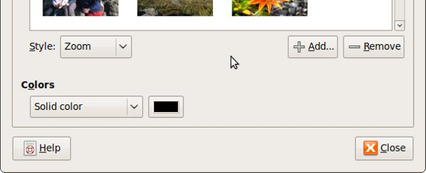

This document shows you how to start Gswitch automatically on every login and how you can easily add more background images.
This section shows you how to install Gswitch so that it runs every time you start GNOME.
On your GNOME desktop, goto: System > Preferences > Startup Applications.
Click on "Add".
Type the following into the appropriate boxes, as detailed below:
Please note that if you want your background to change more or less frequently, you should adjust the "30" to the number of minutes you want. For example, if you want the desktop background to change only once per hour, put 60 here. Likewise, if you want it to change every quarter hour, put 15.
If you want gswitch to wait 60 seconds when it starts (before doing anything else), add the "-p" flag to the command above. This delays gswitch from loading a new background when it is started and is most useful when starting a new GNOME session on slower hardware. The above would become:
This section shows you how to add more backgrounds.
On your GNOME desktop, goto: System > Preferences > Appearance.
Click on the "Background" tab.
Click on "Add" and browse to the image you want to include. Don't forget to set the right style for your image (one of: Tiled, Zoom, Centered, Scaled and Fill).
Please note that newly added backgrounds won't be shown until your next login.
